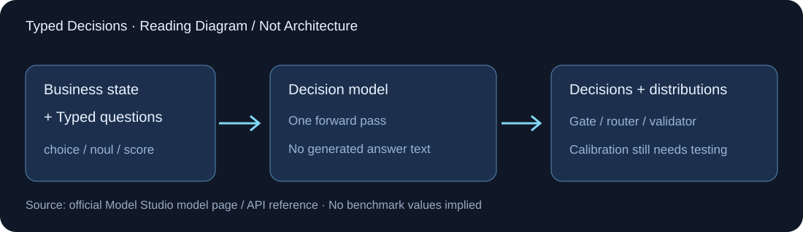

2026-09-24 · 判断专项支线 · Typed decisions
Decision Model Preview
一次业务state并行回答choice / noul / score，不生成回答文本，直接返回决策分布。属于百炼判断模型，不声称它是Qwen某正代权重。
65,536输入/context上限
0生成回答文本tokens
≤16建议每次问题数，非硬上限
概率如何进入工作流
choice做路由，noul返回P(yes)，score给等级索引概率加权期望，可为小数。置信度不能替代独立终态oracle。
专用端点，不是Chat JSON
POST /compatible-mode/v1/systemone。传统Structured Outputs未支持与typed decision响应并不矛盾。
文档冲突要留下
score属性写2–10，限制段又写2–255；建议3–7个清晰等级，服务边界需真实验证。多问题latency仍近线性增长。
训练与校准实验
固定state/rubric，对比typed判断、直接标签、先解释再标签；报告ECE/Brier、误放行、误拒绝和每次有效判断成本。
